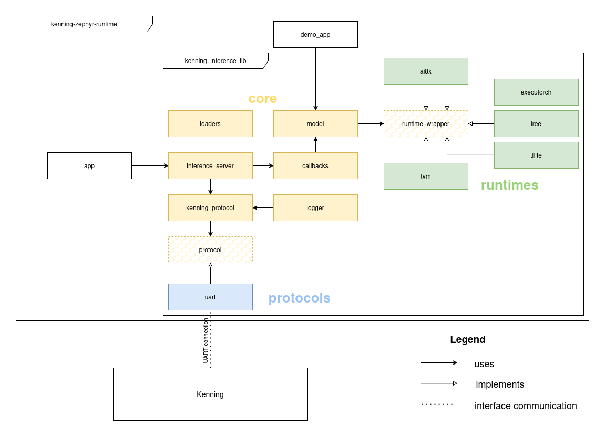

Kenning Zephyr Runtime¶
This chapter describes Kenning Zephyr Runtime - a set of tools for deploying and evaluating models optimized with Kenning on Zephyr RTOS.
Kenning Zephyr Runtime is a C library that consists of:
kenning_inference_libprovides an implementation of Kenning Protocol (for communication with Kenning) and Kenning Runtime-like unified API allowing easy preparation and execution of ML models with the following frameworks:AI8X for Analog Devices MAX78xxx platforms
appis a server-like application usingkenning_inference_libto evaluate models with Kenning running on host using Kenning Protocol to send and receive models, outputs and runtime statisticsdemo_appis an example application, showcasing howkenning_inference_libcan be used without Kenning as a library to run model inference on production regardless of underlying framework
Note
To check support for various runtimes on various boards, see Renode Zephyr Dashboard.
It provides coverage details of Kenning Zephyr Runtime across boards supported by Zephyr RTOS on an example of demo_app.
Each demo is prefixed with KENNING (e.g. KENNING MICROTVM).
Overview of Kenning Zephyr Runtime use-cases:
Running Kenning evaluation examples - see instructions on preparing the environment and then running a simple
appexample.Adding support for a new runtime (ML framework) - see information on
runtime_wrapperandloaders.Adding support for Kenning evaluation on a new board - see instructions on configuring Kenning Zephyr Runtime for a new board.
Using Kenning Zephyr Runtime as a library for model inference - see
modelAPI.
Usage¶
Preparing the environment¶
To use Kenning Zephyr Runtime, first clone the repository:
mkdir -p zephyr-workspace && cd zephyr-workspace
git clone https://github.com/antmicro/kenning-zephyr-runtime.git
cd kenning-zephyr-runtime
Install the following dependencies:
jqcurlwestCMake
Note
On Debian-based distributions, it can be done with:
apt update
apt install -y --no-install-recommends ccache curl device-tree-compiler dfu-util file \
g++-multilib gcc gcc-multilib git jq libmagic1 libsdl2-dev make ninja-build \
python3-dev python3-pip python3-setuptools python3-tk python3-wheel python3-venv \
mono-complete wget xxd xz-utils patch
After that, Python packages can be installed and west workspace can be configured:
pip install west
west init -l .
west update
west zephyr-export
pip install --upgrade pip setuptools
pip install -r requirements.txt -r ../zephyr/scripts/requirements-base.txt
west sdk install --toolchains x86_64-zephyr-elf aarch64-zephyr-elf arm-zephyr-eabi riscv64-zephyr-elf
Alternatively, you can use a script provided with kenning-zephyr-runtime to create a Python virtual environment with all dependencies installed:
./scripts/prepare_zephyr_env.sh
source .venv/bin/activate
This will:
Create a Python virtual environment
Install Python dependencies of Kenning and Kenning Zephyr Runtime
Create a Zephyr workspace and download all modules
Install Zephyr SDK, with toolchains for: x86, RISCV-64, ARM and ARM64 (Aarch64)
The script will also detect if uv tool is present in your system and if so, use it instead of pip. Using uv with Kenning Zephyr Runtime is encouraged for fast dependency installation.
Alternatively, you can do this manually (for example if you want to install a different set of toolchains):
python3 -m venv .venv --system-site-packages
source .venv/bin/activate
pip install pip setuptools west --upgrade
west init -l .
west update
pip install -r requirements.txt -r ../zephyr/scripts/requirements-base.txt
west zephyr-export
west sdk install --toolchains x86_64-zephyr-elf arm-zephyr-eabi riscv64-zephyr-elf aarch64-zephyr-elf
or when using uv:
uv venv .venv --python=3.11
source .venv/bin/activate
uv pip install pip setuptools west --upgrade
west init -l .
west update
uv pip install -r requirements.txt -r ../zephyr/scripts/requirements-base.txt
west zephyr-export
west sdk install --toolchains x86_64-zephyr-elf arm-zephyr-eabi riscv64-zephyr-elf aarch64-zephyr-elf
Note
By default, the Zephyr workspace will be created in a directory containing Kenning Zephyr Runtime repository.
Therefore modules will be installed in ../tvm, ../zephyr etc.
For that reason it is advised to clone the repository into a dedicated folder (as shown above).
One of the Python dependencies installed will be Kenning. You can also install Kenning manually, for a different selection of additional dependencies. For example:
pip install "kenning[tvm,tensorflow,reports,renode] @ git+https://github.com/antmicro/kenning.git"
or when using uv:
uv pip install "kenning[tvm,tensorflow,reports,renode] @ git+https://github.com/antmicro/kenning.git"
Eventually, run:
./scripts/prepare_modules.sh
Some C/C++ dependencies of Kenning Zephyr Runtime are not packaged as Zephyr modules out-of-the-box.
This script will add necessary files to Zephyr and to the modules themselves.
Those files are stored in modules directory in Kenning Zephyr Runtime.
Model evaluation with Kenning (using app)¶
Basic evaluation scenario¶
As an example we will generate a report for a simple CNN model trained on a Magic Wand dataset (recognizing movements based on accelerometer data), ran with TFLite Runtime on stm32f746g_disco board.
First, build app on stm32f746g_disco, using west.
Kenning Zephyr Runtime comes with <runtime>.conf configuration files that set up inference with a specified <runtime>.
tflite.conf config file can be used to run TFLite Micro - this extra configuration file can be added with -DEXTRA_CONF_FILE option:
west build -p always -b stm32f746g_disco app -- -DEXTRA_CONF_FILE=tflite.conf
Option -p always will force west to run a clean build.
Drop the option to run incremental builds.
Built application can be found at build/zephyr/zephyr.elf (build is the default build directory).
Warning
Due to a version conflict, Python dependencies for building with ExecuTorch runtime (executorch.conf configuration file) cannot be installed automatically.
Therefore command pip install executorch>=0.7.0 (or uv pip install executorch>=0.7.0 if using uv) has to be ran before building.
We could run the application on a physical stm32f746g_disco board, which would require running west flash command.
However in this example we will use the Renode to simulate the board.
For that, we need to generate a .repl file (a platform definition file for Renode - for details, please refer to Renode documentation):
west build -t board-repl
This step will need to be repeated every time a clean build is ran or a different board is used.
Before running the simulation we need to install Renode, which can be done with a script:
source ./scripts/prepare_renode.sh
This will:
Download the latest Renode release (if missing)
Export environmental variables, that will allow Kenning to find Renode (for that reason the script has to be ran with
sourceand needs to be re-ran every time a new shell is used)
Finally, we can run Kenning with one of the example scenarios provided with Kenning Zephyr Runtime:
kenning optimize test report \
--cfg kenning-scenarios/magic-wand-inference/tflite/renode-stm32f746g.yml \
--measurements results.json \
--report-path reports/stm32-renode-tflite-magic-wand/report.md \
--to-html
This example scenario looks as follows:
# platform definition, telling where the model will be deployed
platform:
type: ZephyrPlatform
parameters:
name: stm32f746g_disco
simulated: true
zephyr_build_path: ./build
# dataset to use for evaluation of the model (dataset will be downloaded automatically)
dataset:
type: MagicWandDataset
parameters:
dataset_root: ./output/MagicWandDataset
# model that will be executed on device, in here we use trained Keras model
# for gesture recognition
model_wrapper:
type: MagicWandModelWrapper
parameters:
model_path: kenning:///models/classification/magic_wand.h5
# list of optimizations to apply on a model before deployment
# the final runtime is derived from the last Optimizer
optimizers:
- type: TFLiteCompiler
parameters:
compiled_model_path: ./output/magic-wand.tflite
inference_input_type: float32
inference_output_type: float32
When running this, Kenning will:
Optimize the model with
TFLiteCompiler, creating./output/magic-wand.tflitemodel.Automatically run Renode simulation of the built app, finding ELF in
zephyr_build_pathdirectory (simulated: trueoption means that Kenning will run Renode simulation automatically).Connect over (virtual) UART and send model and data for evaluation to the simulated board.
Receive evaluation results and save them under
results.json(as specified with the--measurementsCLI option).Generate a report and save it under
reports/stm32-renode-tflite-magic-wand/
To run evaluation on a physical board (not one simulated in Renode) we would need to set simulated to false and provide a path to the correct UART port with uart_port (example).
It is also possible to run a standalone Renode simulation manually and have Kenning connect to the existing simulation.
To do that you should run:
python ./scripts/run_renode.py
This script will run a Renode simulation of the application currently at build/zephyr/zephyr.elf and mount the UART port at /tmp/uart.
You can then run Kenning separately with platform parameters: simulation: false and uart_port: /tmp/uart.
You can run multiple inference sessions without restarting the simulation (just as you would with a physical board).
Automatic building of Kenning Zephyr Runtime¶
Kenning itself can build Kenning Zephyr Runtime evaluation app and generate the .repl file, allowing you to skip manual steps.
To do that, you need to add runtime_builder to the scenario, as shown below:
platform:
type: ZephyrPlatform
parameters:
name: stm32f746g_disco
simulated: true
# new component responsible for automated build of Zephyr app
runtime_builder:
type: ZephyrRuntimeBuilder
parameters:
workspace: .
run_west_update: false
output_path: ./output
extra_targets: [board-repl]
dataset:
type: MagicWandDataset
parameters:
dataset_root: ./output/MagicWandDataset
model_wrapper:
type: MagicWandModelWrapper
parameters:
model_path: kenning:///models/classification/magic_wand.h5
optimizers:
- type: TFLiteCompiler
parameters:
compiled_model_path: ./output/magic-wand.tflite
inference_input_type: float32
inference_output_type: float32
This example scenario can be ran without first building the app:
kenning optimize test report \
--cfg kenning-scenarios/magic-wand-inference/tflite/renode-auto-stm32f746g.yml \
--measurements results.json \
--report-path reports/stm32-renode-tflite-magic-wand/report.md \
--to-html
Tracing with Zephelin¶
Kenning and Kenning Zephyr Runtime are integrated with Zephelin - Antmicro’s tool for ML-aware tracing in Zephyr RTOS.
You can use that tool to generate a report with detailed information about your model’s time and memory performance, broken down into individual layers. Zephelin allows for collecting traces either through an UART port, USB port or with GDB debugger. Zephelin supports TVM and TFLite.
First, install Zephelin’s Python dependencies:
pip install -r ../zephelin/requirements.txt
Then, you need to build Kenning Zephyr Runtime with Zephelin included, by adding extra configuration files.
For tracing with UART:
west build -p -b stm32f746g_disco app -- -DEXTRA_CONF_FILE="tvm.conf;$(realpath ./zpl.conf);zpl_uart.conf"
For tracing with GDB:
west build -p -b stm32f746g_disco app -- -DEXTRA_CONF_FILE="tvm.conf;$(realpath ./zpl.conf);zpl_gdb.conf"
For GDB tracing, you also need to install GDB with support for multiple architectures. On Linux Debian it can be done with:
apt install -y gdb-multiarch
Finally, you can run optimization, testing and report generation, using a scenario with platform parameter enable_zephelin set to true (or enable_zephelin_gdb for GDB tracing):
platform:
type: ZephyrPlatform
parameters:
name: stm32f746g_disco
simulated: true
# this line enables trace collection
enable_zephelin_gdb: true
zephyr_build_path: ./build/
model_wrapper:
type: MagicWandModelWrapper
parameters:
model_path: kenning:///models/classification/magic_wand.h5
dataset:
type: MagicWandDataset
parameters:
dataset_root: ./output/MagicWandDataset
optimizers:
- type: TVMCompiler
parameters:
compiled_model_path: ./build/compiled-model-magic-wand.graph_data
Since we will be running Kenning Zephyr Runtime in a Renode simulation, we need to prepare a .repl file:
west build -t board-repl
To include traces in the report, you must specify it with --report-types option, as shown below:
kenning optimize test report \
--cfg kenning-scenarios/magic-wand-inference/tvm/renode-zephelin-gdb-stm32f746g.yml \
--measurements build/zephelin-zephyr-stm32-tvm-magic-wand.json --verbosity INFO \
--report-path build/zephelin-zephyr-stm32-tvm.md \
--report-types zephyr_traces renode_stats performance classification \
--to-html
A dedicated report section (zephyr_traces) will be generated, with an interactive window allowing you to analyze the traces with Zephelin Trace Viewer.
A sample Zephyr tracing report has been included in this documentation.
Note
For more details on trace collection in Zephyr, check Zephelin documentation.
Using Linkable Loadable Extensions for switching entire AI runtimes in running app¶
In this example, we will build Kenning Zephyr Runtime and microTVM separately. Then Kenning will send built microTVM to Kenning Zephyr Runtime over Kenning Protocol and it will be dynamically linked with Zephyr’s LLEXT subsystem as en extension.
First, build Kenning Zephyr Runtime with LLEXT:
west build -p always -b stm32f746g_disco app -- -DEXTRA_CONF_FILE=llext.conf
This will build app with no default runtime, and necessary logic to load necessary implementation of runtime from UART-delivered extension.
If running with Renode, generate the .repl file:
west build -t board-repl
Then, build the extension:
west build app -t llext-tvm -- -DEXTRA_CONF_FILE="llext.conf;llext_tvm.conf"
It will be placed in build/llext directory.
Evaluation can be ran with the following scenario:
platform:
type: ZephyrPlatform
parameters:
name: stm32f746g_disco
simulated: true
zephyr_build_path: ./build
# this option tells Kenning to upload following LLEXT to device before running evaluation
llext_binary_path: ./build/llext/tvm.llext
dataset:
type: MagicWandDataset
parameters:
dataset_root: ./output/MagicWandDataset
model_wrapper:
type: MagicWandModelWrapper
parameters:
model_path: kenning:///models/classification/magic_wand.h5
optimizers:
- type: TVMCompiler
parameters:
compiled_model_path: ./output/microtvm-magic-wand.graph_data
You can see, that llext_binary_path was parameter added to platform.
kenning optimize test report \
--cfg kenning-scenarios/magic-wand-inference/tvm/renode-llext-stm32f746g.yml \
--measurements results.json --verbosity INFO \
--report-path reports/stm32-renode-tvm-llext-magic-wand/report.md \
--to-html \
--verbosity INFO
LLEXT is also compatible with runtime building by Kenning.
UART configuration - adding support for a new board¶
By default all Zephyr boards have 1 UART port dedicated to Zephyr console. Kenning Zephyr Runtime will print welcome message and logs to that console - when running Renode simulation Kenning will wait for the welcome message on that UART, before sending any requests (to make sure Kenning Zephyr Runtime booted successfully).
Another UART port is needed for two-way communication with Kenning over Kenning Protocol (sending model data, inputs and outputs).
To inform the app which UART port to use for that purpose we assign kcomms alias to the port, using Zephyr devicetree.
Overlay files adding the alias for various boards can be found in app/boards, for example the overlay file for stm32f746g_disco.
To run Kenning evaluation with app on any given board, such a file has to be created.
Overlay files should be placed at app/boards/<board_name>.overlay (where <board_name> is the name of the board in Zephyr, except if the board name contains any / characters, they should be changed to _) for west to find and use them.
On some boards only one UART port is available, then kcomms can be set to the same port as Zephyr console.
However in such a case printing logs and the welcome message to the console has to be disabled, by adding to the configuration file (app/prj.conf or another config file added with -DEXTRA_CONF_FILE=tflite.conf):
CONFIG_LOG_BACKEND_UART=n
CONFIG_BOOT_BANNER=n
CONFIG_PRINTK=n
Kenning will detect, that kcomms is set to the same port as Zephyr console and will wait for a set amount of time before sending any requests, instead of waiting for the welcome message.
Note
Kenning Zephyr Runtime also sends logs through Kenning Protocol, aside from printing them. Therefore after printing logs to the UART console is disabled, Kenning will still receive and display them.
Some boards may also require additional configuration.
Those should be placed at app/boards/<board_name>.conf.
Building and running the demo_app¶
The demo_app is an example on how to use kenning_inference_lib for model inference.
In can also be used for easy debugging of various runtimes.
Building¶
The example below shows how to build demo_app with IREE runtime in embedded_elf mode and run it with Renode emulator.
In here we select iree_embedded_elf.conf config file to use IREE in embedded_elf mode - in Zephyr applications the default application config is in prj.conf file, but extra configuration files can be specified with -DEXTRA_CONF_FILE option.
west build -p always -b b_u585i_iot02a demo_app -- -DEXTRA_CONF_FILE=iree_embedded_elf.conf
Option -p always will force west to run a clean build.
Drop the option to run incremental builds.
Built application can be found at build/zephyr/zephyr.elf (build is the default build directory).
To run a Renode simulation, we also need to generate a .repl file:
west build -t board-repl
Running¶
Before running the simulation, we need to install Renode, which can be done with a script:
source ./scripts/prepare_renode.sh
This step has to be repeated every time a new shell is used, since the script exports environmental variables.
Finally, we can use a Python script to run the demo:
python ./scripts/run_renode.py
The script will automatically capture output from the Zephyr UART console and print it to the terminal. Output should contain classification results for 10 inferences, along with some inference statistics.
Example:
*** Booting Zephyr OS build cb93f97bd632 ***
I: model output: [wing: 213.957581, ring: 80.423096, slope: 113.229347, negative: 158.669266]
I: model output: [wing: 162.148727, ring: 140.959763, slope: 149.957077, negative: 236.156738]
I: model output: [wing: 188.821167, ring: 250.954254, slope: 465.087280, negative: 329.155548]
I: model output: [wing: 338.350281, ring: 124.087746, slope: 176.398376, negative: 253.115128]
I: model output: [wing: -4.008125, ring: 17.447971, slope: -7.546308, negative: 11.472966]
I: model output: [wing: 92.145882, ring: 120.856918, slope: 199.117325, negative: 148.276291]
I: model output: [wing: 48.781986, ring: -10.816504, slope: 2.117259, negative: 8.108253]
I: model output: [wing: 409.882965, ring: 152.557022, slope: 218.346588, negative: 307.647247]
I: model output: [wing: 131.864807, ring: 56.820183, slope: 77.920113, negative: 98.029968]
I: model output: [wing: 111.868919, ring: 157.771622, slope: 303.319855, negative: 198.856461]
I: inference session statistics:
I: total inference time: 5644 ms
I: inference time per batch: 564 ms
I: device_bytes_allocated: 256032
I: device_bytes_freed: 224144
I: device_bytes_peak: 54288
I: host_bytes_allocated: 32384
I: host_bytes_freed: 30848
I: host_bytes_peak: 17024
I: total_allocated: 473962
I: total_freed: 369068
I: peak_allocated: 132518
Debugging¶
To run Renode simulation of the app with a debug server, use --debug option:
python ./scripts/run_renode.py --debug
A GDB server will be started on port 3333.
Connection can be made in gdb by running:
target remote :3333
Debug symbols can be loaded from the built binary: build/zephyr/zephyr.elf.
Please refer to GDB documentation for further instructions on how to debug with GDB.
Note
Please remember to use version of GDB compatible with the architecture of the selected board.
Building with artificially increased memory size for simulation¶
In some cases we would like to evaluate a model that won’t fit in the board memory together with Kenning Zephyr Runtime, for example when target application is smaller than Kenning Zephyr Runtime, mostly for evaluation purposes.
For such cases, there is a west target called increase-memory.
To do that, run normal build first. For example:
west build -p always -b 96b_nitrogen demo_app -- -DEXTRA_CONF_FILE=tvm.conf
It should fail, due to insufficient memory. Then you can run:
west build -t increase-memory -- -DCONFIG_KENNING_INCREASE_MEMORY_SIZE=2048
This will generate board overlay with increased memory and save it in <application>/boards/<board_name>_increased_memory.overlay.
Example overlay looks like this:
&sram0 {
reg = <0x20000000 0x200000>;
};
The new overlay file will remain there even after clean builds, so this step does not need to be repeated.
To use the overlay, run the build with -CONFIG_KENNING_INCREASE_MEMORY=y option:
west build -p always -b 96b_nitrogen demo_app -- -DEXTRA_CONF_FILE=tvm.conf -DCONFIG_KENNING_INCREASE_MEMORY=y
From here you may proceed normally.
This option is available for both app and demo_app.
Note
Increased memory will only work in a Renode simulation.
General code structure¶
Relationships between Kenning and various elements of Kenning Zephyr Runtime, as well as internal structure of kenning_inference_lib is displayed on the diagram below.

Runtimes¶
runtime_wrapper serves as a common interface for various ML frameworks (runtimes).
runtime_wrapper.h is a header file, that contains the following function declarations:
runtime_init- Initialize the runtime (framework).runtime_init_weights- Load an ML model.runtime_init_input- Load input into the model.runtime_run_model- Run inference.runtime_run_model_bench- Run inference with a time benchmark (results can be downloaded withruntime_get_statistics).runtime_get_model_output- Get output from the model (after inference).runtime_get_statistics- Get statistics (since the beginning of the current inference session, so sinceruntime_initwas last called) - that includes inference time and possibly other framework-dependent statistics.runtime_deinit- De-initialize the runtime.
To add a new framework (runtime) to Kenning Zephyr Runtime, a source file needs to be created that implements all of these functions (example), as well as creates loaders for model and model input (for details see the section about loaders)
Implementation is selected at build time, by linking the correct files with CMake.
Kenning Zephyr Runtime also supports dynamic linking of runtimes through Zephyr’s LLEXT subsystem.
The model API and loaders¶
The model is an abstraction over runtime_wrapper and handles tasks such as data validation.
It also stores model metadata (such as shapes of the model’s inputs and outputs), which it makes available to runtime_wrapper implementations.
It declares and implements functions such as model_load_input, model_run or model_load_struct (for loading model metadata).
For all function declarations see model.h.
All model functions, that take data (model, input or model metadata) as input have 2 versions:
Loading data from an array (
model_load_struct,model_load_weights,model_load_input)Loading data using
loaders(model_load_struct_from_loader,model_load_weights_from_loader,model_load_input_from_loader)
loaders are a mechanism for loading data without large temporary buffers, therefore saving both execution time and memory.
For example, assume we have a model with input size of 2kB, which we receive byte-by-byte over a serial interface.
To load the input with model_load_input (which takes a pointer to an array and array size as arguments) we would need to create a 2kB temporary buffer to store the data arriving over the interface and only call model_load_input after all of the data has been received.
To save that memory we can use loaders - structs stored in a global table (g_ldr_tables), that contain:
pointer to the destination buffer (the final place, where the data is supposed to be loaded - in case of model input it would be an array in the
runtime_wrapperimplementation of the selected framework)number of bytes written
maximum number of bytes, that can be written
state of the loader
pointer to a function for loading the data
pointer to a function for resetting the loader
Functions for loading data and resetting have default implementations and a macro is defined in loaders.h to create an instance of a loader with default functions at the given address and with the given size: MSG_LOADER_BUF(_addr, _max_size).
However a loader with custom implementations of these functions can also be created, to define a custom behaviour.
Every implementation of runtime_wrapper.h creates it’s own loaders in runtime_init for model and model input.
Pointers to these loaders should be placed in g_ldr_tables at indexes [1][LOADER_TYPE_MODEL] for model and [1][LOADER_TYPE_DATA] for input.
Going back to our example - to avoid using a 2kB temporary buffer we can receive the data in batches, saving it into a smaller buffer and repeatedly calling g_ldr_ tables[1][LOADER_TYPE_DATA]->save for each batch, then finally calling model_load_input_from_loader.
An example of that use case can be seen in the receive_message_payload function in kenning_protocol.c.
Communication stack¶
The communication stack consists of 2 abstraction layers:
protocol- lower layer, provides functionsprotocol_init,protocol_read_dataandprotocol_write_data, allows for sending raw bytes over an interfacekenning_protocol- implementation of Kenning Protocol, using the data link provided byprotocol, provides functionsprotocol_transmitandprotocol_listen(requests are not supported).protocol_listenusesloadersto receive message payload, it takes as a callback function that returns the correct callback based on message type.
Header file protocol.h only serves as an interface and declares the functions.
Function are defined by implementations.
Currently 1 implementation is provided (uart.c).
Inference server and callbacks¶
inference_server provides functions: init_server, wait_for_protocol_event and handle_protocol_event.
wait_for_protocol_event receives a request from Kenning by calling protocol_listen, while handle_protocol_event calls the correct callback function from callbacks (selected based on message type) and sends response to the request based on on values returned by the callback.
Callback functions from callbacks translate requests from Kenning to proper actions by calling functions from model.
For example output_callback calls model_get_output.
Logger¶
Kenning Zephyr Runtime uses built-in logging framework from Zephyr RTOS. However it defines it’s own logging backend to send log messages back to Kenning over Kenning Protocol.